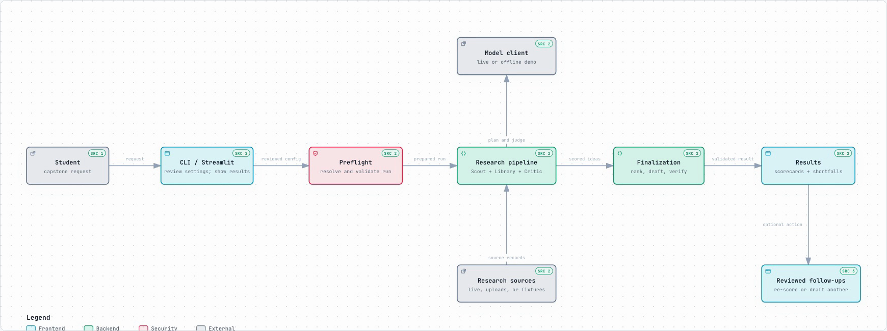

Scope a project
Set the domain, time available, interest area, and the kind of idea you want to explore.
CAPSTONE RESEARCH · LIMITED PREVIEW
ScoutSpark helps students explore ideas that fit their interests, skills, time, and resources. It searches for supporting sources and shows when evidence is not strong enough for a detailed plan.
Research runs locally with your own provider setup. This Pages site is a static project overview.
A RESEARCH PATH YOU CAN FOLLOW
Move through a reviewed workflow. See what was searched, how ideas were assessed, and where the evidence is still limited.
Set the domain, time available, interest area, and the kind of idea you want to explore.
Use configured search providers for current sources, or select Offline demo to explore synthetic examples.
Preview the resolved sources, limits, scoring weights, and budget before research starts.
Compare scorecards, gate outcomes, and source receipts. A high score does not clear a failed gate.
SEE THE FLOW
LIMITED PREVIEW
Results can be incomplete or unverified. Check sources and warnings before relying on an idea. A small set of evaluations has shown real quality and proposal-yield limitations.
ONE SYSTEM VIEW

RUN IT ON YOUR COMPUTER
For live research, install ScoutSpark locally and add the search and model credentials you choose to use. Review budgets before starting a run.
git clone https://github.com/FaniBhushan/SparkScout.git
cd SparkScout
python -m pip install -r requirements.txt
python -m streamlit run streamlit_app.pyFull setup instructions